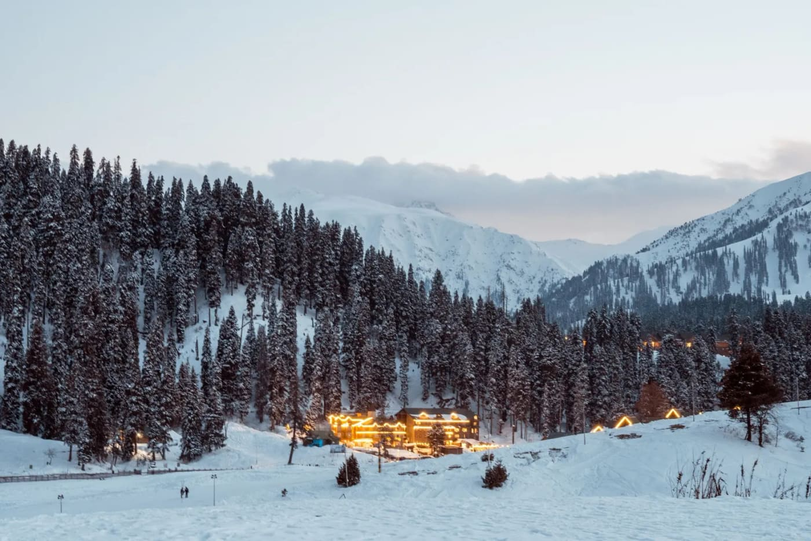
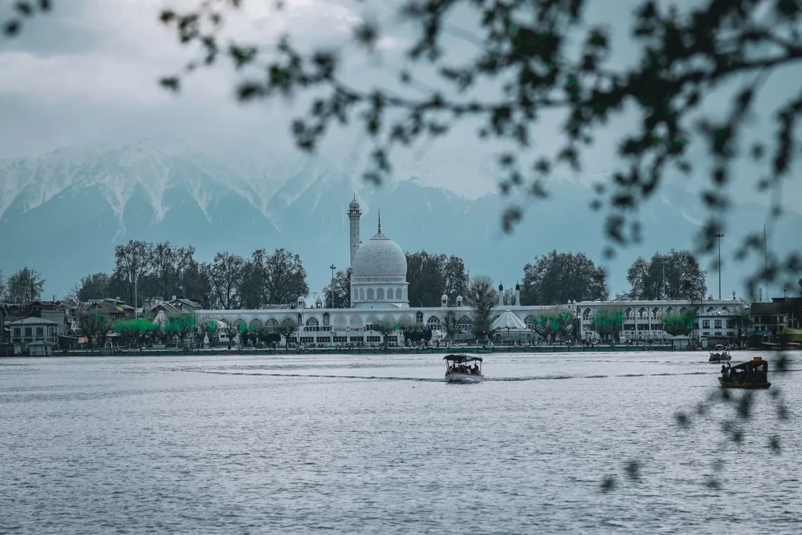

Your driver meets you at Srinagar airport or the railway station. After you've settled in, see the Mughal gardens of Nishat and Shalimar, laid out in terraces above Dal Lake in the 1600s: bare chinar trees in winter, and sometimes snow on the lawns. End the day with an hour on a shikara as the light goes over the Zabarwan hills.
Overnight
Srinagar, in a hotel
Meals
Dinner
Included
Pick-up at the airport or railway station, Nishat and Shalimar gardens, a sunset shikara ride on Dal Lake (1 hour)
Optional, paid locally A photo session in Kashmiri dress on a shikara, an old city craft walk (papier-mâché and pashmina).
Day 252 km each wayAbout 2 hours
Snow day in Gulmarg

Drive west through apple orchards to Tangmarg for a cup of kahwa, then up the winding road to Gulmarg, a bowl of snow at 2,650 m ringed by fir forest. Walk to St Mary's Church and the old Maharaja's palace, build a snowman, try a sledge, or ride the gondola towards Apharwat for views across the Pir Panjal range.
On snow daysAfter heavy snow only 4x4s may drive the last stretch from Tangmarg. We arrange one if needed.
Overnight
Srinagar, in a hotel or on a houseboat
Meals
Breakfast, dinner
Included
A private car with a heater for the day, a kahwa stop in Tangmarg
Optional, paid locally The Gulmarg gondola (Phase 1 to Kongdoori, Phase 2 towards Apharwat), a snow 4x4 from Tangmarg on snow days, a 2-hour ski taster with an instructor, a sledge ride, a snowmobile or ATV ride, a pony ride, a snow coat and boots on hire.
Day 325 kmAbout an hour with the stops
Hazratbal, the old city and home

After breakfast, visit the white marble Hazratbal shrine on the shore of Dal Lake, then the old city's wooden Jamia Masjid on the way to your flight or train.
Meals
Breakfast
Included
Hazratbal and the old city on the way, a drop at the airport or railway station
Optional, paid locally A sunrise shikara to the floating market, an old city craft walk (papier-mâché and pashmina).
IncludedIn the price
What your price covers
2 nights in Srinagar (3-star and Luxury: 1 hotel night and 1 houseboat night)
Breakfast and dinner every day (2 breakfasts, 2 dinners)
Heated rooms (a heater or an electric blanket in budget hotels)
Private car with a heater and driver for every transfer and day out in the itinerary
Pick-up and drop at Srinagar airport or railway station
Sunset shikara ride on Dal Lake (1 hour)
Fuel, tolls, parking and the driver's costs
5% GST
Not includedPaid by you
What it does not
Flights and train tickets to and from Srinagar
Lunches
Entry tickets (Mughal gardens, Betaab Valley)
Gulmarg gondola tickets, unless listed above
Local union taxis, ponies and sledges in Gulmarg, Pahalgam and Sonamarg
Activities you add to your trip
Travel insurance
Tips and personal expenses
Snow 4x4 from Tangmarg on snow days
Before you bookSaid plainly
Good to know before you decide
The coldest weeksThe coldest weeks (Chillai Kalan) run from 21 December to about 30 January. Nights can drop well below freezing, so pack thermals, a warm jacket, gloves, a cap and waterproof shoes.
Is this trip right for you?
It's a short trip: day 2 is a full day out with about 2 hours' drive each way.
Want to sleep in the snow? Look at Pick Your Snow Night or Gulmarg Snow Stay.
Good to know
In Gulmarg, Pahalgam and Sonamarg some places can only be reached by local union taxis, ponies or snow 4x4s. We arrange them if you'd like and they go in your quote.
Prepaid SIM cards from outside Jammu & Kashmir don't work here. Postpaid connections do.
Carry a government photo ID. Hotels ask for it, and it can be checked on the road.
Winter in Kashmir
Days are short: the sun sets around 5:30 pm in December and January, so we start early on day trips.
Snow can close roads for a few hours or a day. We keep you informed and swap the plan to whatever is open.
Morning fog can delay flights in December and January. An afternoon flight home gives you a cushion.
EnquireKashmir Snow Weekend
Tell us your dates. We reply with a written quote.
Three taps and two fields. No payment is needed to enquire.